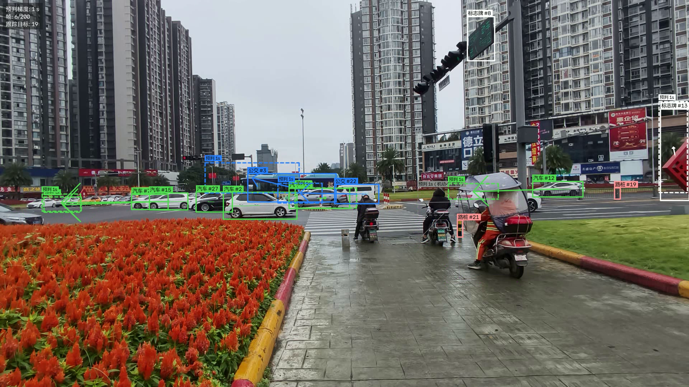
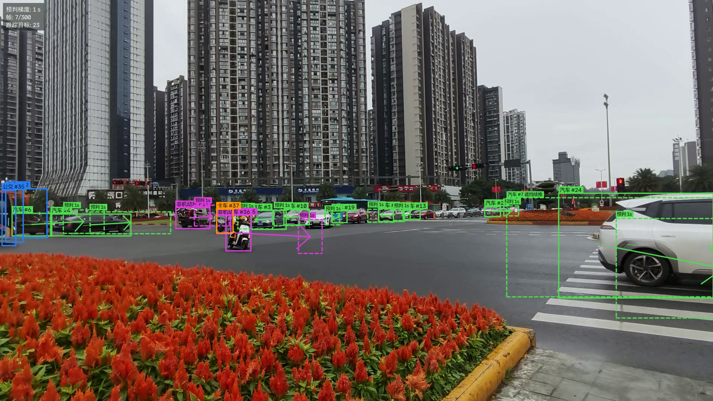

输入 2~30 秒监控视频 + 选择 0.1 / 0.5 / 1 / 2 秒预判梯度，输出框出目标类型与预判位置的连续视频。 本报告汇总 2026-10-02 至 10-06 的全部数据、实验结果与结论，含 12 项已实测证伪的技术路线。
一句话：软件闭环已经跑通，检测端在目标域上达标并交付试用；预判端在 0.1~1 秒可信，2 秒只宜作方向示意。剩余的误差不再来自"算法选得不对"，而是来自小目标的标注数据量与 1~2 秒尺度上世界本身的变化。
每天的工作与关键产出，对应 docs/ 下的编号文档。
R 一键清理重叠行人框。nonmotor，7 类方案 v7；原始标注零改动，可回退。backups/20261005_1404/ 留存停止点（权重 + 代码 + 文档）。软件已可运行，默认参数即为实测最优组合。
python -m trafficvision.cli --video 输入.mp4 --horizon 1 --out 输出.mp4 --json 数据.json --weights outputs/train/v7/weights/best.pt
| 配置项 | 默认值 | 依据 |
|---|---|---|
| 检测权重 | outputs/train/v7/weights/best.pt | 目标域召回最高（mAP50 0.637） |
| 推理分辨率 | 1280 | 960→1280 精确率 +32%，1600 回落 |
| 跟踪器 | ByteTrack | 五种跟踪器横评，精度无增益，长缓冲净收益为负 |
| 运动模型 | auto（仅 2 秒档用维度判定） | 0.5~1 秒用维度判定是负收益，已修正分工点 |
| 过程噪声 | accel_std = 400 | 降到 100~200 中位好 5%，但 P90 差 3~8%，不值 |
| 串轨防护 | 开（位移 > max(40px, 4×步长中位) 且 IoU < 0.1） | 跳变 −39%，覆盖率仅 −0.6% |
| 遮挡续推 | COAST_FRAMES = 12（≈0.4 秒） | 可预判目标 +54%，续推误差反低于实测样本 |
| 机动门控 | 关（仅标注，可用 --gate-maneuver 打开） | 拦掉 13% 覆盖换均值 −8%、显著错判 −14% |


"模型再改，不如数据对。" 当前唯一不可再生的资产是人工复核标注。
| 数据集 | 规模 | 性质与用途 |
|---|---|---|
videoset_01 原始素材 | 15 段 + 5 图 | 30/60fps 混合、5 段可变帧率、含竖屏与多分辨率 |
videoset_01_label | 277 帧 / 3612 框 | 人工逐帧复核，不可再生，训练与评测的核心资产 |
_auto_reference | 277 帧 | 纯自动标注对照，用于差异分析 |
supplement_mined / _extra | 191 / 220 帧 | 从自采视频挖出的自行车、摩托难例，可重挖 |
supplement_val_extra | 58 帧 | 验证集扩充（真值仍为自动标注） |
visdrone_tricycle | 2661 帧 / 9635 框 | VisDrone 转换，含 car/person/motorcycle 配套标注；399 帧专项验证从不进训练 |
train_v4 | 473 / 116 | 按视频划分的干净数据集（早期版本工作集） |
train_v5 | 973 / 116 | 街面 473 + 俯拍抽样 500；验证集与 v4 逐张一致 |
train_v7 | 1524 条目 | 7 类；图片硬链接建立，不额外占盘 |
videoset_02_origin | 14 段 / 13371 帧 | 用户真实素材，1080p 城市路口，约 6.2 分钟 |
videoset_02_label | 332 帧 | 自动标注草稿 + 复核副本，人工复核尚未进行 |
这条分布本身就解释了后面所有的"短板"：卡车 955、公交 509、标志牌 122，稀疏类别不可能学得稳。
277 帧上对比"纯自动标注"与"人工复核后标注"，结果直接决定了后续所有数据工作的方向：
| 项目 | 数量 | 占比 | 说明 |
|---|---|---|---|
| 自动标注框 | 3970 | — | 基准 |
| 人工复核后 | 3612 | — | 当前训练资产 |
| 被删（自动误检） | 592 | 14.9% | 错误以"多报"为主 |
| 新增（自动漏检） | 234 | 6.5% | 摩托是唯一漏检严重的类 |
| 改了类别 | 177 | 4.5% | 其中 133 个被改成 motorcycle |
| 框位置/大小被修正 | 几乎为零 | — | 匹配框 IoU 中位 = 1.000（工具当时不支持拖角缩放） |
误检率最高的三类：truck 44.8%（同一处店面招牌被几十帧反复误检）、bicycle 40.5%（实际是电动车/踏板车）、person 25.2%（背景杂物 + 骑手残留）。这三条直接催生了后面的类别细化与"先载具、后行人"标注规则。
R 一键清理重叠行人框；
类别固定 9 类且顺序不可改：car, truck, bus, motorcycle, bicycle, person, sign, bollard, tricycle；
电动车/踏板车归 motorcycle，三轮车与三轮棚车归 tricycle（按要求不拆分 e-bike）。
bench/build_train_v4.py 等构建脚本已内置"按视频排除验证集"逻辑，勿绕过。
9 个版本、三份验证集。跨验证集的数字不可比——这是项目早期踩过的坑，所有对比都在同一份验证集上重跑。
| 版本 | 训练数据 | 8 类均值 | 汽车 | 卡车 | 公交 | 摩托 | 自行车 | 行人 | 路桩 |
|---|---|---|---|---|---|---|---|---|---|
| v1 | 219 张人工复核 | 0.210 | 0.731 | 0.002 | 0.005 | 0.328 | 0.028 | 0.376 | 0.000 |
| v3 | +151 干净补充（370） | 0.587 | 0.886 | 0.592 | 0.860 | 0.544 | 0.121 | 0.710 | 0.395 |
| v4 | +220 扩充（473） | 0.586 | 0.863 | 0.621 | 0.861 | 0.528 | 0.077 | 0.697 | 0.457 |
| v5 | +500 俯拍三轮（973） | 0.601 | 0.877 | 0.627 | 0.905 | 0.621 | 0.045 | 0.685 | 0.443 |
| 验证集 | v6（9 类） | v7 · yolo11n 链式 | v8n · yolo11n 从零 | v8s · yolo11s 从零 |
|---|---|---|---|---|
| 新素材 65 帧 mAP50 | 0.478* | 0.637 | 0.615 | 0.597 |
| 新素材精确率 / 召回率 | — | 0.604 / 0.620 | 0.570 / 0.590 | 0.673 / 0.479 |
| 旧街面 116 帧 mAP50 | 0.608 | 0.701 | 0.636 | 0.698 |
| 俯拍 399 帧 mAP50 | 0.314 | 0.407 | 0.310 | 0.408 |
* v6 为 9 类口径、imgsz 960；其余为 7 类口径、imgsz 1280。合并类别本身会让 mAP 上升，"把自行车认成摩托"不再算错，因此跨方案的总分不可直接比较——真正可比的是未参与合并的汽车/卡车/公交/行人四类。
6 段新素材 × 300 帧，v7 权重，imgsz 1280。误差是"预判位置与 h 秒后真实位置"的像素距离。
在 videoset_01 的 14751 个样本上归因：误差几乎完全由像素位移速度决定，快慢目标相差 8 倍。这不是模型失效，而是透视投影的必然结果——近处快速目标在画面上的位移天然更大。相对误差各分组都在 35%~50% 区间，说明绝对误差差异主要来自位移量差异。
| 分组 | 样本 | 平均误差 | 中位误差 |
|---|---|---|---|
| 快速目标 > 150 px/s | 4043 | 147.7 px | 94.5 px |
| 中速 50~150 px/s | 4707 | 43.1 px | 29.5 px |
| 慢速 < 50 px/s | 6001 | 18.8 px | 13.4 px |
| 大目标（近距离） | 1769 | 157.6 px | 98.0 px |
| 小目标（远距离） | 3118 | 13.9 px | 9.6 px |
| 摩托车 | 1261 | 94.9 px | 39.7 px |
| 行人 | 6063 | 48.2 px | 17.2 px |
转角速度是"该不该相信这条预判"的有效信号，但它不能用来算得更准（见第八节）。
| 机动强度（1 秒梯度） | 样本 | 匀速中位误差 | 圆弧外推中位误差 | 占误差总量 |
|---|---|---|---|---|
| 直行 |ω| < 5°/s | 1414 | 35.3 px | 41.7 px | 18% |
| 缓弯 5~15°/s | 869 | 41.8 px | 57.1 px | 12% |
| 转弯 15~40°/s | 400 | 49.0 px | 84.6 px | 7% |
| 急转 > 40°/s | 744 | 62.0 px | 164.4 px | 12% |
新素材上曾出现 1 秒中位 69.6 px 的异常，归因过程排除了两个常见猜想，找到真正的大头。
| 配置 | 每帧可预判 | 连续占比 | 轨迹数 | 轨迹中位长 | 跳变/千帧 |
|---|---|---|---|---|---|
| ByteTrack 默认（基线） | 10.26 | 69.1% | 660 | 27 | 72.2 |
| ByteTrack conf 0.10 | 11.02 | 70.5% | 669 | 28 | 64.4 |
| ByteTrack 长缓冲（buffer 75） | 12.11 | 65.7% | 259 | 111 | 149.4 |
| BoT-SORT + ReID | 10.50 | 61.4% | 282 | 91 | 147.8 |
| OCSORT | 10.66 | 63.4% | 611 | 27 | 73.3 |
长缓冲把覆盖率提到 12.11/帧，但跳变率翻倍，净收益为负。
| 改进 | 机制 | 效果 |
|---|---|---|
串轨防护 _TrackGuard | 位移 > max(40px, 4×步长中位) 且与上一帧框 IoU < 0.1 → 切断轨迹换新 ID | 跳变 72.2→43.9 /千帧（−39%） 涉事轨迹 9.1%→5.2% |
遮挡续推 COAST_FRAMES=12 | 被遮挡时用卡尔曼外推继续显示（虚线框 + "遮挡续推"） | 每帧可预判 10.26→15.84（+54%） 续推样本误差中位 29.3 px |
| 机动置信度 | 最近 0.6 秒轨迹拟合转角速度，|ω|≥15°/s 或偏离直线 ≥25px 判低置信 | 8.8% 目标被标低置信 画面改灰色细虚线 + "机动·低置信" |
早期报告曾称"微调后轨迹抖动变差"，那是目标集合差异造成的假象。换成逐帧 IoU 配对的同目标口径后：
| 对比 | 配对轨迹 | 类别一致率 | 模型 A 抖动 | 模型 B 抖动 | 配对抖动比中位 |
|---|---|---|---|---|---|
| 开放词汇 vs v3 | 91 条 | 0.901 | 0.58 px（21.1%） | 0.66 px（22.3%） | 1.20 |
| v3 vs v5 | 145 条 | 0.959 | 0.68 px（25.9%） | 0.72 px（26.2%） | 1.05 |
结论：同一批目标上，微调模型的轨迹抖动与开放词汇模型几乎相同。跨模型比抖动一律用配对口径。
这是本阶段最有价值的部分之一：12 条看似合理的优化路线，全部有数据证明无效或得不偿失。
| 路线 | 实测证据 | 结论 |
|---|---|---|
| 匀加速模型（CA） | 1 秒 88.2/134.2 px vs 匀速 34.2/56.9 px，差 3~8 倍 | 差 3~8 倍，CLI 已标注不建议 |
| 累积误差增益标定 | 最优位移增益 0.896，修正后仅改进 2.5% | 相对误差是随机误差，不是常量偏差 |
| TrackTrack 换跟踪器 | 轨迹条数 −79%，但每帧可预判目标 −44.6%，误差更差 | 分母效应误判，默认改回 ByteTrack |
| BoT-SORT+ReID / OCSORT / 长缓冲 | 同一批目标上中位误差只差 1~3 px | 无效 |
| 圆弧/CTRV 外推救转弯 | 阻尼转角扫描 gain=0 在每一档最优；急转档 69 → 164 px | 转角估计噪声大于转弯效应 |
| IMM 交互式多模型（filterpy） | 8573 样本完全配对，IMM 更准的只占 50%，中位 +0.9 / 均值 +1.2 px | 整体打平偏负，未采纳 |
| 调卡尔曼过程噪声 | 降到 100~200 中位好 5~6%，但 P90 差 3~8% | 产品更在意不出现离谱框，保持 400 |
| 自适应卡尔曼（在线估噪声） | 中位 32.6→31.2，但 P90 116.6→125.8 | 没打破"中位 vs 尾部"两难 |
| 继续提高推理分辨率到 1600 | 新素材 0.637→0.563、旧街面 0.701→0.677 | 两个验证集都变差（模型在 960 上训） |
| 换更大的检测模型（yolo11s） | 目标域 0.597 < 链式微调 yolo11n 的 0.637 | 无效（但精确率更高，属取向差异） |
| SAHI 切图推理 | 按标准后处理合并后：新素材 0.615→0.600、旧街面 0.674→0.634 | 只有非机动车 +4%，整体更差 |
| 地面平面（BEV）运动建模 | 产品中位 34.6 / 均值 57.7 vs BEV 45.9 / 167.1，BEV 仅在 40% 样本更准 | 在它本该赢的"深度变化大"档输得最多（61.9→94.1） |
| 验证集 | imgsz | mAP50 | 精确率 | 召回率 | 行人 AP |
|---|---|---|---|---|---|
| 新素材 65 帧 | 960 | 0.585 | 0.459 | 0.577 | 0.417 |
| 新素材 65 帧 | 1280 | 0.637 | 0.604 | 0.620 | 0.462 |
| 新素材 65 帧 | 1600 | 0.563 | 0.568 | 0.504 | 0.474 |
| 旧街面 116 帧 | 960 | 0.680 | 0.639 | 0.677 | 0.716 |
| 旧街面 116 帧 | 1280 | 0.701 | 0.683 | 0.662 | 0.743 |
代价约 +18% 推理耗时（0.092 秒/帧，含渲染的端到端约 0.24 秒/帧）。已设为 pipeline 与 CLI 默认值，零新增依赖。
按"现阶段可以承诺什么"分三档，全部基于 videoset_02 实测（自动标注真值，复核后需重算）。
以车、公交、非机动车为主要目标，以 0.1~1 秒为主要梯度。
| 指标 | 目标 | 当前 | 状态 |
|---|---|---|---|
| 汽车 / 公交 / 标志牌 AP50 | ≥ 0.70 | 0.88 / 0.76 / 0.87 | 达标 |
| 非机动车 AP50 | ≥ 0.55 | 0.57 | 刚达标（融合可到 0.65） |
| 0.1 s 预判中位误差 | ≤ 5 px | 4.3 px | 达标 |
| 0.5 s 预判中位误差 | ≤ 20 px | 16.4 px | 达标 |
| 1 s 预判中位误差 | ≤ 35 px | 31.2 px | 临界达标 |
| 每帧可预判目标 | ≥ 12 个 | 17.0 个 | 达标 |
| 轨迹跳变率 | ≤ 60 /千帧 | 50.6 | 达标 |
| 差距 | 当前 | 建议目标 | 达成路径（按性价比） |
|---|---|---|---|
| 行人检测 | 0.462 | ≥ 0.70 | 新素材行人实例仅 278 个，需补标注/补拍（切图推理已实测无效） |
| 卡车检测 | 0.285 | ≥ 0.60 | 实例仅 46 个，属数据量问题，先补样本再谈模型 |
| 非机动车 | 0.568 | ≥ 0.75 | v7+v8s 融合已实测到 0.654；继续补两三轮车素材 |
| 1 秒预判 | 31.2 px | ≤ 25 px | 目前无已知技术路径，建议改为"分梯度承诺" |
| 2 秒预判 | 75~78 px | ≤ 60 px | 同上 |
| 轨迹跳变率 | 50.6 /千帧 | ≤ 30 /千帧 | 继续收紧串轨判据 + ReID 只用于接断轨场景 |
柱子越长越好；灰色游标为 0.70 可用线。括号内为该类真实框数量——数量太少时，分数本身不可信。
以下几条如果不写清楚，前面所有数字都可能被误读。
bench/eval_compare*.py 重跑。本报告表格均已标注验证集与分辨率。
coasting 对象，
避免"自己给自己打分"。但如果下游业务要基于续推位置做判定，需要单独评估。
按优先级排序。前两项需要你提供输入，第三项之后我可以直接做。
| # | 事项 | 需要谁 | 产出 |
|---|---|---|---|
| 1 | 人工复核 videoset_02 的 332 帧（工具与新类别均已就绪，优先顺序已排好） | 你 | 用它替换自动标注真值，重算本报告全部数字，量化自动标注的虚高幅度 |
| 2 | 确认用途取向：实时优先（继续 v7 单模型）还是精度优先（接入 v7+v8s 融合，+3% mAP50、非机动车 +11%，代价是推理算力翻倍） | 你 | 决定是否做 pipeline 的双模型 + WBF 结构性改动 |
| 3 | 若要提行人 / 卡车：补标注与素材（行人实例 278、卡车 46，都是数据量问题） | 共同 | 针对性的采集清单 + 标注任务 |
| 4 | 可选：把"分梯度置信承诺"写进产品输出（JSON 增加每梯度置信等级） | 我 | 交付文档 + JSON schema 变更 |
| 5 | 可选：若确定固定在某个点位部署，做一次真正相机标定 | 共同 | 解锁 BEV 路线（需重新验证），并可输出真实米/秒速度 |
预算 15 GB，当前 5.4 GB（2026-10-06 实测）。
| 任务 | 入口 |
|---|---|
| 预判出视频 | python -m trafficvision.cli --video X --horizon 1 --out Y --weights ... |
| 中文标注复核 | python tools/annotate_zh.py datasets/videoset_02_label |
| 数据集构建 | bench/build_train_v4.py、v5/v6/v7 |
| 训练 | bench/train_v7.py、train_v8.py（后台启动，进度看 results.csv 轮数） |
| 检测端对比 | bench/eval_compare_v5.py、bench/eval_compare_models.py、bench/imgsz_sweep.py |
| 预判端对比 | bench/run_predict_set.py、predict_compare_v5.py、jitter_matched.py |
| 误差归因 | bench/track_diagnostics.py、error_breakdown.py、maneuver_analysis.py |
| 否掉的路线 | bench/imm_experiment.py、bev_experiment.py、tiled_inference.py |
| 目录 | 内容 |
|---|---|
backups/20261004_2131/ | 跟踪 / 遮挡改动前（v5 / v6 / v7 权重 + 代码） |
backups/20261005_1125/ | 机动检测改动前 |
backups/20261005_1254/ | 推理分辨率 1280 改动前（含 vendor/filterpy） |
backups/20261005_1404/ | 本轮停止点：v7 / v8n / v8s 权重 + 全部代码 / 配置 / 文档 / 实验记录 |
results.csv 轮数，不要看进程是否存在。YOLO_CONFIG_DIR=<项目>\.cache\ultralytics，否则会尝试写用户目录并失败。python -m 调用。& 会导致双击批处理失效。train_v5/data.yaml，7 类权重配 train_v7/*.yaml。docs/项目状态与实验记录.md（总表，2026-10-06 更新）docs/07 三轮车并入与评测口径修正 · docs/08 类别合并为非机动车docs/09 跟踪与遮挡处理 · docs/10 机动检测与运动模型修正docs/11 GitHub 开源方案调研与采纳 · docs/12 更大检测模型对比 · docs/13 模型融合实验docs/14 下一阶段效果需求 · docs/15 论文调研与技术路线